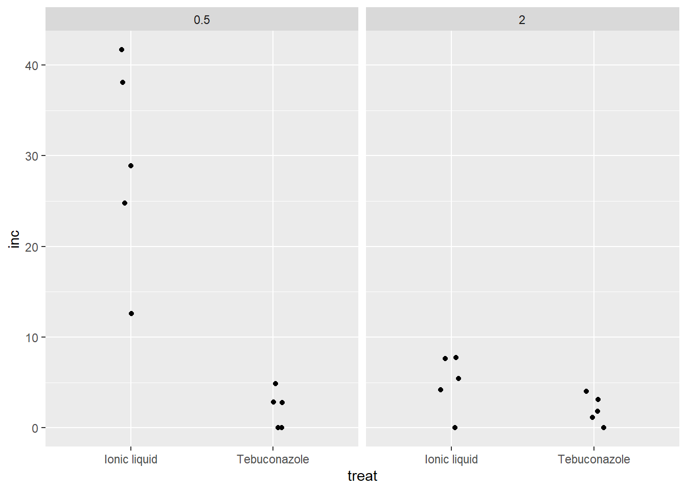
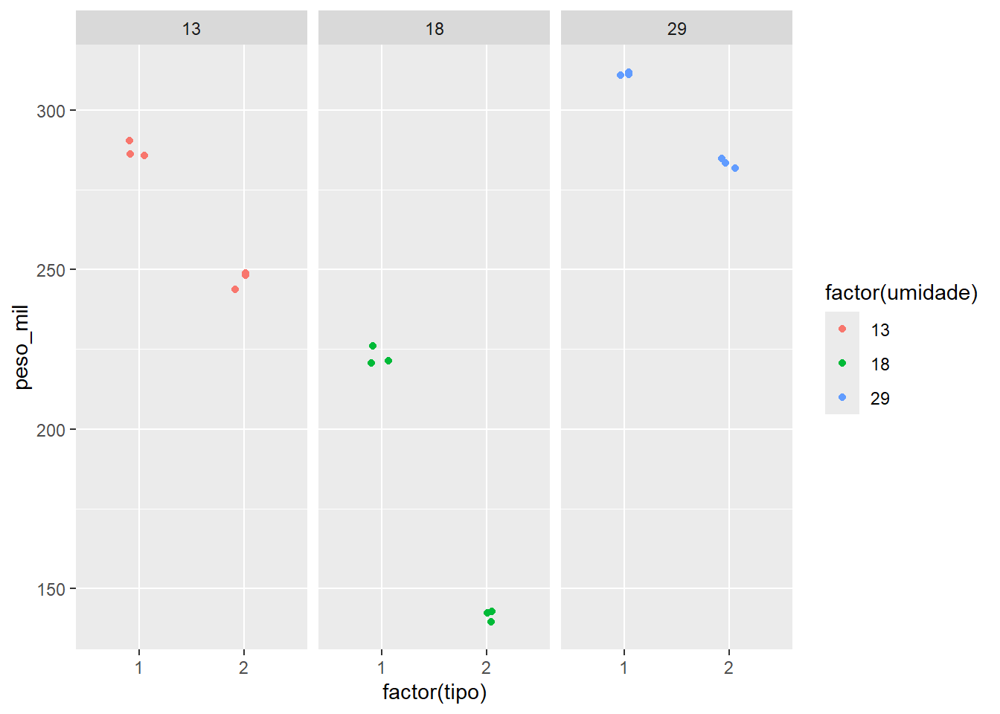

Code
# A tibble: 6 × 3
especie rep tcm
<chr> <dbl> <dbl>
1 Fasi 1 1.5
2 Fasi 2 1.59
3 Fasi 3 1.52
4 Fasi 4 1.52
5 Fasi 5 1.6
6 Fasi 6 1.7 A ANOVA (Análise de Variância) é uma ferramenta estatística utilizada para comparar as médias de três ou mais grupos independentes, com o objetivo de identificar se existem diferenças estatisticamente significativas entre eles. O teste se baseia na estatística F, que avalia a variação entre os grupos em relação à variação dentro dos grupos. A hipótese nula assume que todas as médias são iguais, enquanto a hipótese alternativa sugere que ao menos uma média difere das demais.
Quando se analisa um único fator experimental, a ANOVA é chamada de anova unifatorial. Ela é apropriada em experimentos com delineamento inteiramente casualizado, onde os tratamentos são aplicados aleatoriamente.
Dados: Usaremos dados de um experimento que foi conduzido para comparar a taxa de crescimento micelial (TCM) entre diferentes espécies de um fungo fitopatogênico. Neste caso, a variável resposta é a TCM, e o fator em estudo é a espécie do fungo.A hipotese é se a espécie influencia significativamente a taxa de crescimento micelial?
Antes de realizar a análise, é necessário fazer o carregamento dos pacotes estatísticos e a importação dos dados. Em seguida, verifica-se a estrutura do banco e prepara-se o conjunto para as análises de pressupostos e aplicação da ANOVA propriamente dita.
# A tibble: 6 × 3
especie rep tcm
<chr> <dbl> <dbl>
1 Fasi 1 1.5
2 Fasi 2 1.59
3 Fasi 3 1.52
4 Fasi 4 1.52
5 Fasi 5 1.6
6 Fasi 6 1.7 Com a importação dos dados, vamos visualizalos através de um geom_bloxplot:
Para realizar uma ANOVA no R, é necessário criar um modelo estatístico utilizando a função aov(), onde se especifica a variável resposta em função do fator (tratamento).
No nosso caso a variável resposta TCM (taxa de crescimento micelial) e o fator espécie. Se os dados estiverem no conjunto chamado micelial, o modelo será criado da seguinte forma (aov1 <- aov(tcm ~ especie, data = micelial)). Após criar o modelo, pode-se obter o quadro de análise de variância com a função summary.
Df Sum Sq Mean Sq F value Pr(>F)
especie 4 1.4696 0.3674 19.63 2.03e-07 ***
Residuals 25 0.4679 0.0187
---
Signif. codes: 0 '***' 0.001 '**' 0.01 '*' 0.05 '.' 0.1 ' ' 1Esse resumo traz informações como os graus de liberdade, soma de quadrados, valor de F e o p-valor, permitindo avaliar se há diferenças significativas entre os grupos. Assim podemos dizer que nesse conjunto de dados, não há diferença na media micelial, ou seja, não há efeito significativo da espécie sobre o cresc. micelial).
Agora testaremos as premissas:
Após realizar a ANOVA, é fundamental verificar se as premissas do modelo foram atendidas, pois isso garante a validade dos resultados. Entre as premissas, a homogeneidade das variâncias (homocedasticidade) é considerada ainda mais crucial que a normalidade dos dados.
Pacotes recomendados para a verificação
Para facilitar essa verificação, podemos utilizar dois pacotes do R:
performance: fornece funções para testar as premissas do modelo, como a função check_model(), que oferece um diagnóstico completo;
DHARMa (Distributed Hierarchical Accumulation of Residuals for Generalized Linear Models): é uma ferramenta avançada para diagnóstico gráfico dos resíduos do modelo, permitindo comparar os resíduos observados com resíduos simulados, ajudando a identificar violações como não-normalidade e heterocedasticidade.
Além disso, o pacote DHARMa simula resíduos do modelo e os compara visualmente com os resíduos observados, facilitando a identificação de problemas na distribuição dos dados ou na variabilidade dos resíduos. Essa abordagem gráfica complementa os testes estatísticos tradicionais, oferecendo uma avaliação mais intuitiva.Depois dessa análise visual, deve-se realizar o teste formal de normalidade dos resíduos, que combina os resultados da ANOVA e os resíduos obtidos para validar a suposição de normalidade. Esse procedimento assegura que as conclusões do teste sejam confiáveis.
OK: Error variance appears to be homoscedastic (p = 0.880).Plotando os graficos de residuos:
Shapiro-Wilk normality test
data: aov1$residuals
W = 0.9821, p-value = 0.8782Podemos assim observar que as premissas foram atendidas, com efeito não significativo das espécies.
Quando os dados violam as premissas básicas da ANOVA, como a normalidade dos resíduos e a homogeneidade das variâncias, os resultados da análise paramétrica podem se tornar inválidos. Nesses casos, é recomendável utilizar métodos não paramétricos, que são mais robustos e não exigem distribuição normal dos dados.
Usaremos como base o conjunto de dados InsectSprays, disponível no pacote base datasets do R. Esse conjunto registra o efeito de diferentes tipos de inseticidas na mortalidade de insetos, conforme descrito em Beall (1942). A variável resposta é o número de insetos mortos, e o fator em estudo é o tipo de spray utilizado. Se, ao aplicar uma ANOVA, as premissas não forem atendidas, uma alternativa adequada é o uso do teste de Kruskal-Wallis, que é o equivalente não paramétrico da ANOVA para comparar três ou mais grupos independentes. Vamos lá?
# A tibble: 72 × 2
spray count
<fct> <dbl>
1 A 10
2 A 7
3 A 20
4 A 14
5 A 14
6 A 12
7 A 10
8 A 23
9 A 17
10 A 20
# ℹ 62 more rowsVamos visualizar os dados:
Bom, aparentemente podemos dizer que os dados se encaixam como não paramétricos, mas antes é preciso fazer anova e checar as premissas:
Df Sum Sq Mean Sq F value Pr(>F)
spray 5 2669 533.8 34.7 <2e-16 ***
Residuals 66 1015 15.4
---
Signif. codes: 0 '***' 0.001 '**' 0.01 '*' 0.05 '.' 0.1 ' ' 1Warning: Heteroscedasticity (non-constant error variance) detected (p < .001).Agora podemos considerar que os dados não seguem normalidade e homogenidade.
Partindo das analises agora vamos avaliar quais alternativas podemos usar para os dados não parametricos:
Uma abordagem comum é aplicar transformações matemáticas na variável resposta para tentar ajustar os dados às premissas dos testes paramétricos. As transformações mais utilizadas incluem:
Raiz quadrada (sqrt())
Logaritmo (log())
Transformação Box-Cox
Então, vamos lá?
Df Sum Sq Mean Sq F value Pr(>F)
spray 5 88.44 17.688 44.8 <2e-16 ***
Residuals 66 26.06 0.395
---
Signif. codes: 0 '***' 0.001 '**' 0.01 '*' 0.05 '.' 0.1 ' ' 1Quando os dados não atendem à normalidade ou homocedasticidade, utiliza-se o teste de Kruskal-Wallis, que compara grupos com base em postos, sem exigir distribuição normal; pode ser executado com o pacote agricolae.
Kruskal-Wallis rank sum test
data: count by spray
Kruskal-Wallis chi-squared = 54.691, df = 5, p-value = 1.511e-10
Study: insects$count ~ insects$spray
Kruskal-Wallis test's
Ties or no Ties
Critical Value: 54.69134
Degrees of freedom: 5
Pvalue Chisq : 1.510845e-10
insects$spray, means of the ranks
insects.count r
A 52.16667 12
B 54.83333 12
C 11.45833 12
D 25.58333 12
E 19.33333 12
F 55.62500 12
Post Hoc Analysis
t-Student: 1.996564
Alpha : 0.05
Minimum Significant Difference: 8.462804
Treatments with the same letter are not significantly different.
insects$count groups
F 55.62500 a
B 54.83333 a
A 52.16667 a
D 25.58333 b
E 19.33333 bc
C 11.45833 cemmeans (Estimated Marginal Means) permite comparar médias ajustadas entre grupos, sendo especialmente útil após modelos lineares (como GLM). Para obter as médias no valor original, usa-se type = "response"; pwpm() gera a tabela comparativa e cld() diferencia os grupos por letras.
Df Sum Sq Mean Sq F value Pr(>F)
spray 5 2669 533.8 34.7 <2e-16 ***
Residuals 66 1015 15.4
---
Signif. codes: 0 '***' 0.001 '**' 0.01 '*' 0.05 '.' 0.1 ' ' 1Warning: Heteroscedasticity (non-constant error variance) detected (p < .001). spray emmean SE df lower.CL upper.CL
A 14.50 1.13 66 12.240 16.76
B 15.33 1.13 66 13.073 17.59
C 2.08 1.13 66 -0.177 4.34
D 4.92 1.13 66 2.656 7.18
E 3.50 1.13 66 1.240 5.76
F 16.67 1.13 66 14.406 18.93
Confidence level used: 0.95 A B C D E F
A [14.50] 0.9952 <.0001 <.0001 <.0001 0.7542
B -0.833 [15.33] <.0001 <.0001 <.0001 0.9603
C 12.417 13.250 [ 2.08] 0.4921 0.9489 <.0001
D 9.583 10.417 -2.833 [ 4.92] 0.9489 <.0001
E 11.000 11.833 -1.417 1.417 [ 3.50] <.0001
F -2.167 -1.333 -14.583 -11.750 -13.167 [16.67]
Row and column labels: spray
Upper triangle: P values adjust = "tukey"
Diagonal: [Estimates] (emmean) type = "response"
Lower triangle: Comparisons (estimate) earlier vs. later spray emmean SE df lower.CL upper.CL .group
C 2.08 1.13 66 -0.177 4.34 1
E 3.50 1.13 66 1.240 5.76 1
D 4.92 1.13 66 2.656 7.18 1
A 14.50 1.13 66 12.240 16.76 2
B 15.33 1.13 66 13.073 17.59 2
F 16.67 1.13 66 14.406 18.93 2
Confidence level used: 0.95
P value adjustment: tukey method for comparing a family of 6 estimates
significance level used: alpha = 0.05
NOTE: If two or more means share the same grouping symbol,
then we cannot show them to be different.
But we also did not show them to be the same. 3. GLM:
Modelos Lineares Generalizados (GLM): São recomendados para publicações por sua robustez e elegância, evitando transformações nos dados; utiliza-se a função glm() com family = poisson(link = "identity"), e a verificação do modelo pode ser feita com gráficos do pacote DHARMa.

Call:
glm(formula = count ~ spray, family = poisson(link = "identity"),
data = insects)
Coefficients:
Estimate Std. Error z value Pr(>|z|)
(Intercept) 14.5000 1.0992 13.191 < 2e-16 ***
sprayB 0.8333 1.5767 0.529 0.597
sprayC -12.4167 1.1756 -10.562 < 2e-16 ***
sprayD -9.5833 1.2720 -7.534 4.92e-14 ***
sprayE -11.0000 1.2247 -8.981 < 2e-16 ***
sprayF 2.1667 1.6116 1.344 0.179
---
Signif. codes: 0 '***' 0.001 '**' 0.01 '*' 0.05 '.' 0.1 ' ' 1
(Dispersion parameter for poisson family taken to be 1)
Null deviance: 409.041 on 71 degrees of freedom
Residual deviance: 98.329 on 66 degrees of freedom
AIC: 376.59
Number of Fisher Scoring iterations: 3 spray emmean SE df asymp.LCL asymp.UCL .group
C 2.08 0.417 Inf 1.27 2.90 1
E 3.50 0.540 Inf 2.44 4.56 12
D 4.92 0.640 Inf 3.66 6.17 2
A 14.50 1.100 Inf 12.35 16.65 3
B 15.33 1.130 Inf 13.12 17.55 3
F 16.67 1.180 Inf 14.36 18.98 3
Confidence level used: 0.95
P value adjustment: tukey method for comparing a family of 6 estimates
significance level used: alpha = 0.05
NOTE: If two or more means share the same grouping symbol,
then we cannot show them to be different.
But we also did not show them to be the same. Quando a análise envolve dois ou mais fatores, não é possível aplicar testes não paramétricos como o Kruskal-Wallis, que são limitados a comparações unifatoriais. Nesse caso, utiliza-se a função aov(), estendendo a fórmula do modelo.
Iremos usar o banco de dados fungicida-vaso, do mesmo conjunto do dados diversos:
Agora vamos calcular a % do numero de espigas com doenças, criando uma nova coluna:

Vamos gerar um modelo anova, tratando-os como dados qualitativos:
Df Sum Sq Mean Sq F value Pr(>F)
treat 1 1132.3 1132.3 30.36 4.75e-05 ***
dose 1 736.8 736.8 19.75 0.000408 ***
treat:dose 1 727.4 727.4 19.50 0.000433 ***
Residuals 16 596.8 37.3
---
Signif. codes: 0 '***' 0.001 '**' 0.01 '*' 0.05 '.' 0.1 ' ' 1Vamos checar premissas:
Warning: Non-normality of residuals detected (p = 0.011).Warning: Heteroscedasticity (non-constant error variance) detected (p < .001).Vamos visualizar com DHARMa:
Embora, a normalidade tenha apresentado anormalidade, vamos tentar tranformar os dados usando log:
Df Sum Sq Mean Sq F value Pr(>F)
treat 1 14.937 14.937 16.385 0.000933 ***
dose 1 4.025 4.025 4.415 0.051813 .
treat:dose 1 5.507 5.507 6.041 0.025761 *
Residuals 16 14.586 0.912
---
Signif. codes: 0 '***' 0.001 '**' 0.01 '*' 0.05 '.' 0.1 ' ' 1Vamos agora estimar as medias dos tratamentos para cada interação:
dose = 0.5:
treat response SE df lower.CL upper.CL
Ionic liquid 27.05 11.800 16 10.642 67.61
Tebuconazole 1.21 0.731 16 0.193 3.73
dose = 2.0:
treat response SE df lower.CL upper.CL
Ionic liquid 3.43 1.680 16 1.090 9.22
Tebuconazole 1.49 0.852 16 0.307 4.43
Confidence level used: 0.95
Intervals are back-transformed from the log(mu + 0.5) scale dose = 0.5:
treat response SE df lower.CL upper.CL .group
Tebuconazole 1.21 0.731 16 0.193 3.73 1
Ionic liquid 27.05 11.800 16 10.642 67.61 2
dose = 2.0:
treat response SE df lower.CL upper.CL .group
Tebuconazole 1.49 0.852 16 0.307 4.43 1
Ionic liquid 3.43 1.680 16 1.090 9.22 1
Confidence level used: 0.95
Intervals are back-transformed from the log(mu + 0.5) scale
Note: contrasts are still on the log(mu + 0.5) scale. Consider using
regrid() if you want contrasts of back-transformed estimates.
significance level used: alpha = 0.05
NOTE: If two or more means share the same grouping symbol,
then we cannot show them to be different.
But we also did not show them to be the same. Coeficiente de variação:
Aqui vamos usar dados a
# A tibble: 6 × 6
tipo umidade tempo rep peso_vol peso_mil
<dbl> <dbl> <dbl> <dbl> <dbl> <dbl>
1 1 13 0 1 704. 291.
2 1 13 0 2 708. 290.
3 1 13 0 3 701. 298.
4 2 13 0 1 704. 291.
5 2 13 0 2 708. 290.
6 2 13 0 3 701. 298.
Interação entre tipo de armazenamento e o tempo (8)
Df Sum Sq Mean Sq F value Pr(>F)
factor(tipo) 1 11215 11215 2375.8 3.64e-15 ***
factor(umidade) 2 42814 21407 4534.8 < 2e-16 ***
factor(tipo):factor(umidade) 2 2329 1165 246.7 1.79e-10 ***
Residuals 12 57 5
---
Signif. codes: 0 '***' 0.001 '**' 0.01 '*' 0.05 '.' 0.1 ' ' 1Tipo de inoculação na incidencia de Fusarium
Df Sum Sq Mean Sq F value Pr(>F)
hybrid 5 105876446 21175289 8.312 2.66e-05 ***
method 1 42951 42951 0.017 0.897
hybrid:method 5 10619453 2123891 0.834 0.534
Residuals 36 91709593 2547489
---
Signif. codes: 0 '***' 0.001 '**' 0.01 '*' 0.05 '.' 0.1 ' ' 1 hybrid emmean SE df lower.CL upper.CL
30F53 HX 10598 564 36 9453 11742
30F53 YH 9309 564 36 8165 10454
30K64 11018 564 36 9874 12162
30S31H 8652 564 36 7507 9796
30S31YH 8056 564 36 6912 9201
BG7049H 12402 564 36 11257 13546
Results are averaged over the levels of: method
Confidence level used: 0.95 hybrid emmean SE df lower.CL upper.CL .group
30S31YH 8056 564 36 6912 9201 1
30S31H 8652 564 36 7507 9796 12
30F53 YH 9309 564 36 8165 10454 12
30F53 HX 10598 564 36 9453 11742 23
30K64 11018 564 36 9874 12162 23
BG7049H 12402 564 36 11257 13546 3
Results are averaged over the levels of: method
Confidence level used: 0.95
P value adjustment: tukey method for comparing a family of 6 estimates
significance level used: alpha = 0.05
NOTE: If two or more means share the same grouping symbol,
then we cannot show them to be different.
But we also did not show them to be the same. Se a interação não der significativa, nos retiramos a interação e deixamos so o fator que teve significancia.
Df Sum Sq Mean Sq F value Pr(>F)
hybrid 5 105876446 21175289 8.688 1.02e-05 ***
Residuals 42 102371996 2437428
---
Signif. codes: 0 '***' 0.001 '**' 0.01 '*' 0.05 '.' 0.1 ' ' 1 Df Sum Sq Mean Sq F value Pr(>F)
hybrid 5 105876446 21175289 8.688 1.02e-05 ***
Residuals 42 102371996 2437428
---
Signif. codes: 0 '***' 0.001 '**' 0.01 '*' 0.05 '.' 0.1 ' ' 1checando a heteroscedasticidade:
hybrid emmean SE df lower.CL upper.CL
30F53 HX 10598 552 42 9484 11712
30F53 YH 9309 552 42 8195 10423
30K64 11018 552 42 9904 12132
30S31H 8652 552 42 7538 9765
30S31YH 8056 552 42 6942 9170
BG7049H 12402 552 42 11288 13516
Confidence level used: 0.95 hybrid emmean SE df lower.CL upper.CL .group
30S31YH 8056 552 42 6942 9170 1
30S31H 8652 552 42 7538 9765 12
30F53 YH 9309 552 42 8195 10423 123
30F53 HX 10598 552 42 9484 11712 234
30K64 11018 552 42 9904 12132 34
BG7049H 12402 552 42 11288 13516 4
Confidence level used: 0.95
P value adjustment: tukey method for comparing a family of 6 estimates
significance level used: alpha = 0.05
NOTE: If two or more means share the same grouping symbol,
then we cannot show them to be different.
But we also did not show them to be the same. 30F53 HX 30F53 YH 30K64 30S31H 30S31YH BG7049H
30F53 HX [10598] 0.5709 0.9942 0.1494 0.0254 0.2125
30F53 YH 1288 [ 9309] 0.2643 0.9576 0.5999 0.0036
30K64 -420 -1709 [11018] 0.0447 0.0059 0.4938
30S31H 1946 658 2366 [ 8652] 0.9723 0.0003
30S31YH 2541 1253 2962 595 [ 8056] <.0001
BG7049H -1804 -3092 -1384 -3750 -4345 [12402]
Row and column labels: hybrid
Upper triangle: P values adjust = "tukey"
Diagonal: [Estimates] (emmean)
Lower triangle: Comparisons (estimate) earlier vs. laterQuando se trabalha com dados não paramétricos envolvendo apenas um fator, é possível aplicar transformações, testes não paramétricos (como Kruskal-Wallis) ou modelos lineares generalizados, conforme discutido anteriormente.
No entanto, quando há dois ou mais fatores, especialmente com interação entre eles, os testes não paramétricos convencionais não são adequados. Nesses casos, uma abordagem alternativa é utilizar o método dos postos (rank).
Esse método consiste em transformar os dados em ranks (valores ordenados), permitindo a aplicação de modelos lineares aos dados ranqueados. Com isso, é possível avaliar os efeitos principais e a interação entre os fatores, mesmo quando os pressupostos da ANOVA não são atendidos.
Df Sum Sq Mean Sq F value Pr(>F)
treat 1 192.20 192.20 11.596 0.00362 **
dose 1 76.05 76.05 4.588 0.04792 *
treat:dose 1 120.05 120.05 7.243 0.01606 *
Residuals 16 265.20 16.58
---
Signif. codes: 0 '***' 0.001 '**' 0.01 '*' 0.05 '.' 0.1 ' ' 1vamos usar emmeans para ver as medias em rank:
dose = 0.5:
treat emmean SE df lower.CL upper.CL .group
Tebuconazole 6.9 1.82 16 3.04 10.8 1
Ionic liquid 18.0 1.82 16 14.14 21.9 2
dose = 2.0:
treat emmean SE df lower.CL upper.CL .group
Tebuconazole 7.9 1.82 16 4.04 11.8 1
Ionic liquid 9.2 1.82 16 5.34 13.1 1
Confidence level used: 0.95
significance level used: alpha = 0.05
NOTE: If two or more means share the same grouping symbol,
then we cannot show them to be different.
But we also did not show them to be the same. Agora podemos criar a tabela e colocar os dados originais com os dados rankeados.
Vamos usar o conjunto de dados fungicida_campo:
O modelo de ANOVA com blocos é utilizado quando há uma fonte de variação adicional além dos tratamentos, chamada de bloco. O objetivo dos blocos é controlar a variabilidade entre unidades experimentais que poderiam afetar os resultados, tornando a comparação entre tratamentos mais precisa.
É especialmente útil quando as unidades experimentais são heterogêneas, mas podem ser agrupadas em subconjuntos (blocos) relativamente homogêneos.
No delineamento em blocos, adiciona o sinal de + para adicionar a repetição.
[1] "TRAT" "BLOCO" "DFC" "FER" "PROD" Df Sum Sq Mean Sq F value Pr(>F)
TRAT 1 1303140 1303140 7.310 0.0113 *
BLOCO 1 33403 33403 0.187 0.6683
Residuals 29 5169700 178266
---
Signif. codes: 0 '***' 0.001 '**' 0.01 '*' 0.05 '.' 0.1 ' ' 1Verificando as premissas:
Warning: Non-normality of residuals detected (p = 0.036).Agora vamos estimar as médias:
TRAT emmean SE df lower.CL upper.CL .group
4.5 4999 74.6 29 4846 5151 1
Confidence level used: 0.95
significance level used: alpha = 0.05
NOTE: If two or more means share the same grouping symbol,
then we cannot show them to be different.
But we also did not show them to be the same. Vamos usar conjunto milho do dados diversos e ajustamos o modelo:
Error: factor(block)
Df Sum Sq Mean Sq
factor(block) 3 592.2 197.4
Error: factor(block):hybrid
Df Sum Sq Mean Sq F value Pr(>F)
hybrid 5 974.2 194.84 3.14 0.0389 *
Residuals 15 930.9 62.06
---
Signif. codes: 0 '***' 0.001 '**' 0.01 '*' 0.05 '.' 0.1 ' ' 1
Error: factor(block):hybrid:method
Df Sum Sq Mean Sq F value Pr(>F)
method 1 79.61 79.61 4.726 0.0433 *
hybrid:method 5 265.28 53.06 3.150 0.0324 *
Residuals 18 303.18 16.84
---
Signif. codes: 0 '***' 0.001 '**' 0.01 '*' 0.05 '.' 0.1 ' ' 1